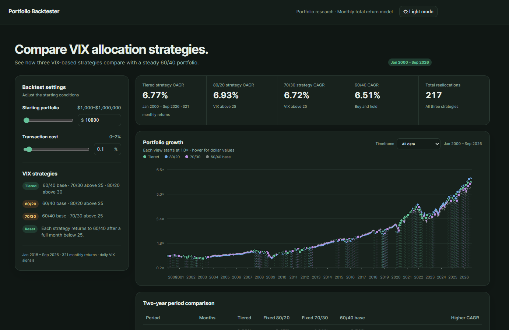

Experiments and tools I’ve built. Some are live sites, others are code on GitHub to check out.
1Project

02
VIX-adjusted 60/40-portfolio model
I wanted to find out if rebalancing between a 60/40, 70/30 and a 80/20 portfolio simply by looking at the VIX-index results in better risk adjusted returns. Latest model available both in code and GitHub pages.
I wanted to see if buying stocks when their RSI is low can beat buying and holding SPY. The latest version includes a simple leveraged trading algorithm. This was my very first project.